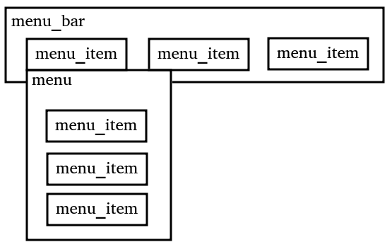

Simple menu
Create a simple menu.
Layout

Connection layout
simplemenu.c
int main(int argc, char *argv[]) {
gtk_init(&argc, &argv);
GtkWidget *window;
window = gtk_window_new(GTK_WINDOW_TOPLEVEL);
ggtk_window_set_title (window, "Window title");
ggtk_window_set_default_size (window, 200, 200);
gg_signal_connect(window, "destroy", gtk_main_quit, NULL);
GtkWidget *vbox = gtk_box_new(GTK_ORIENTATION_VERTICAL, 0);
ggtk_container_add(window,vbox);
GtkWidget *menubar = gtk_menu_bar_new();
ggtk_box_pack_start(vbox, menubar, FALSE, FALSE, 0);
{
GtkWidget *menuTitle = gtk_menu_item_new_with_label("MenuBarItem");
ggtk_menu_shell_append(menubar, menuTitle);
{
GtkWidget *menu = gtk_menu_new();
ggtk_menu_item_set_submenu(menuTitle,menu);
{
GtkWidget *menuItem1 = gtk_menu_item_new_with_label("Menu Item 1");
ggtk_menu_shell_append(menu, menuItem1);
GtkWidget *menuItem2 = gtk_menu_item_new_with_label("Menu Item 2");
ggtk_menu_shell_append(menu, menuItem2);
GtkWidget *menuItem3 = gtk_menu_item_new_with_label("Menu Item 3");
ggtk_menu_shell_append(menu, menuItem3);
GtkWidget *menuItem4 = gtk_menu_item_new_with_label("Quit");
ggtk_menu_shell_append(menu, menuItem4);
gg_signal_connect(menuItem4, "activate", gtk_main_quit, NULL);
}
}
GtkWidget *menuTitle2 = gtk_menu_item_new_with_label("MenuBarItem 2");
ggtk_menu_shell_append(menubar, menuTitle2);
{
}
}
gtk_widget_show_all (window);
gtk_main();
return 0;
}
Submenu
Additional code for creating a submenu.
This code must be inserted somewhere after the menu creation.
Because of the braces it is independed of the other entries
Addition to simplemenu.c
GtkWidget *sep = gtk_separator_menu_item_new();
ggtk_menu_shell_append(menu, sep);
{
GtkWidget *menuItem5 = gtk_menu_item_new_with_label("Submenu");
ggtk_menu_shell_append(menu, menuItem5);
{
GtkWidget *submenu = gtk_menu_new();
ggtk_menu_item_set_submenu(menuItem5,submenu);
{
GtkWidget *menuItem1 = gtk_menu_item_new_with_label("Menu Item 1--");
ggtk_menu_shell_append(submenu, menuItem1);
GtkWidget *menuItem2 = gtk_menu_item_new_with_label("Menu Item 2--");
ggtk_menu_shell_append(submenu, menuItem2);
}
}
}
Menu item with icon
Trick: Create horizontal layout with an icon to the left.
Addition to simplemenu.c
{
// create menu item with image with icon
GtkWidget *layout = gtk_box_new(GTK_ORIENTATION_HORIZONTAL,6);
GtkWidget *icon = gtk_image_new_from_icon_name("gtk-quit", GTK_ICON_SIZE_MENU);
GtkWidget *label = gtk_label_new ("Quit");
GtkWidget *menuItemWithIcon = gtk_menu_item_new();
ggtk_container_add(layout, icon);
ggtk_container_add(layout, label);
ggtk_container_add(menuItemWithIcon, layout);
ggtk_menu_shell_append(menu, menuItemWithIcon);
gg_signal_connect(menuItemWithIcon, "activate", gtk_main_quit, NULL);
}
Menu with Mnemonics (Menu control with keyboard)
Additional code to simplemenu.c (widget with mnemonics)
GtkWidget *menuItem1 = gtk_menu_item_new_with_mnemonic("_New");
ggtk_menu_shell_append(menu, menuItem1);
Additional code to simplemenu.c (widget with icon and mnemonics)
{
GtkWidget *layout = gtk_box_new(GTK_ORIENTATION_HORIZONTAL,6);
GtkWidget *icon = gtk_image_new_from_icon_name("gtk-quit", GTK_ICON_SIZE_MENU);
GtkWidget *label = gtk_label_new_with_mnemonic ("_Quit");
GtkWidget *menuItemWithIcon = gtk_menu_item_new();
ggtk_container_add(layout, icon);
ggtk_container_add(layout, label);
ggtk_container_add(menuItemWithIcon, layout);
ggtk_menu_shell_append(menu, menuItemWithIcon);
gg_signal_connect(menuItemWithIcon, "activate", gtk_main_quit, NULL);
}
Create Popup menu (aka right-click menu)
Function for opening a right-click menu in general
int showPopupMenu(GtkWidget *gtkMenu, GdkEvent *gdkEventButton)
{
const gint RIGHT_CLICK = 3 ;
if (gdkEventButton->type == GDK_BUTTON_PRESS){
GdkEventButton *buttonEvent = (GdkEventButton *) gdkEventButton;
if(buttonEvent->button == RIGHT_CLICK){
ggtk_menu_popup_at_pointer(gtkMenu, NULL);
}
return TRUE;
}
return FALSE;
}
This needs to be fed with a created menu
Function for opening a right-click menu in general
int main(int argc, char *argv[]) {
gtk_init(&argc, &argv);
GtkWidget* window = gtk_window_new(GTK_WINDOW_TOPLEVEL);
ggtk_window_set_title (window, "Window title");
ggtk_window_set_default_size (window, 200, 200);
gg_signal_connect(window, "destroy", gtk_main_quit, NULL);
GtkWidget *vbox = gtk_box_new(GTK_ORIENTATION_VERTICAL, 0);
ggtk_container_add(window,vbox);
GtkWidget * eventBox = gtk_event_box_new();
ggtk_box_pack_start(vbox, eventBox, TRUE, TRUE, 0);
GtkWidget * popupMenu = gtk_menu_new();
GtkWidget * menuItem = gtk_menu_item_new_with_label("Quit");
gtk_widget_show(menuItem);
ggtk_menu_shell_append(popupMenu, menuItem);
gg_signal_connect(menuItem, "activate", gtk_main_quit, NULL);
gg_signal_connect_swapped(eventBox, "button-press-event", showPopupMenu, popupMenu);
gtk_widget_show_all (window);
gtk_main();
return 0;
}